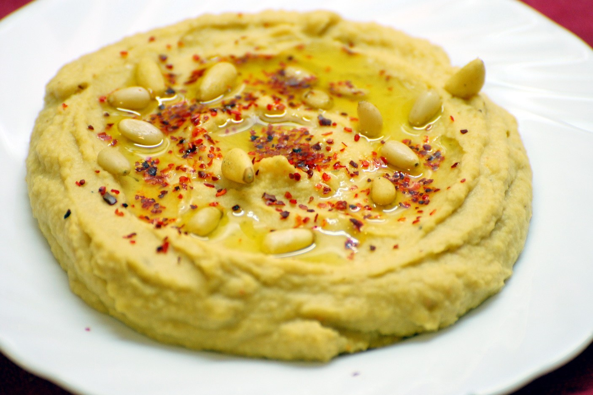
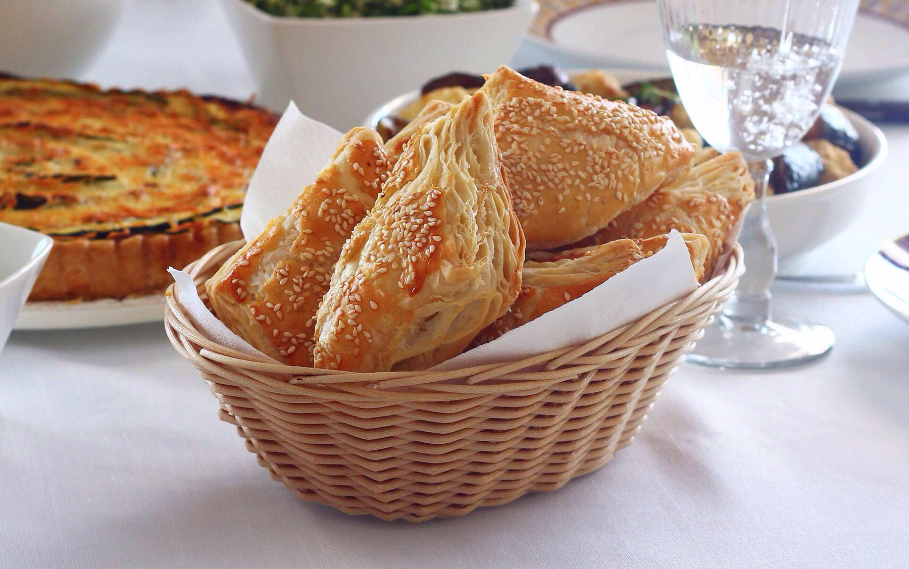
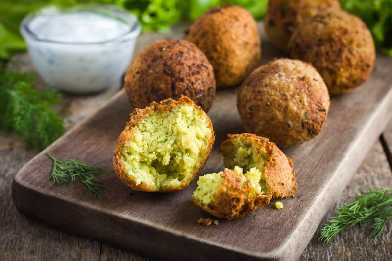
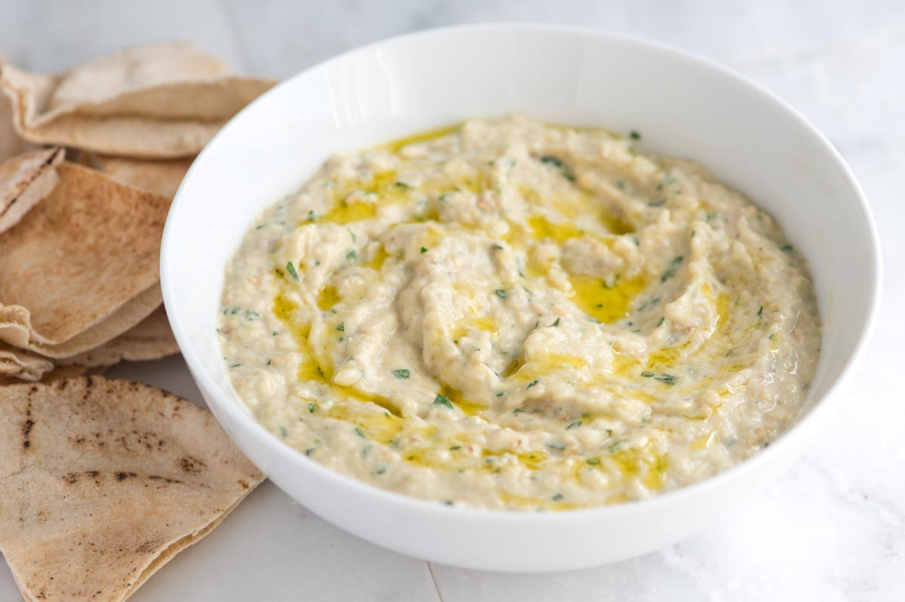
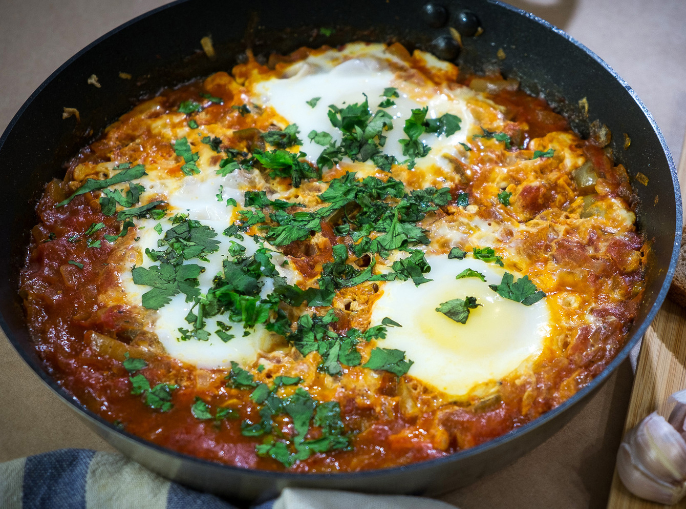
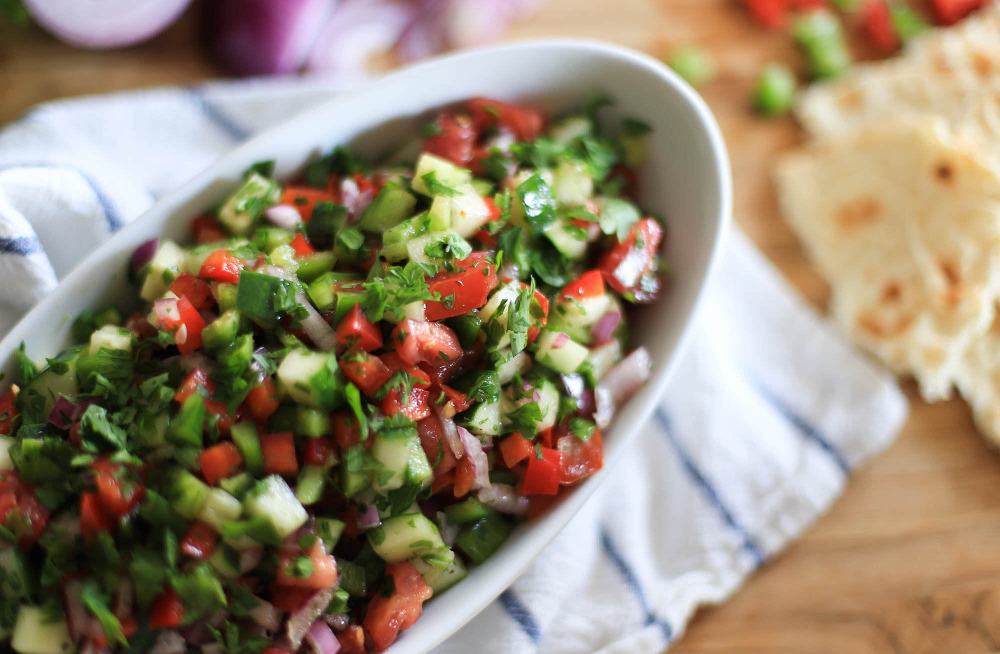
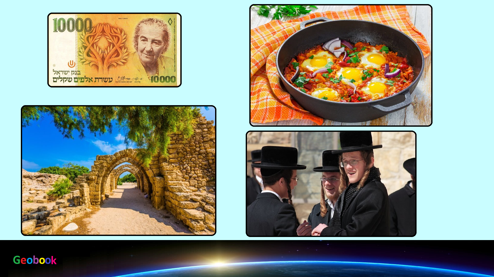

____
Традиционная еда
Хумус — Закуска представляет собой пасту золотистого цвета, приправленную оливковым маслом. Продают хумус вместе с питой – лепешкой, которую для удобства оборачивают бумагой. Такая еда может быть закуской перед основным обедом или ужином, или основным блюдом.

Бурекас — Еда имеет турецкие и балканские корни. Главная особенность – стандартная форма блюда, по которой можно определить начинку:
квадратная – картофельная начинка;
треугольная – сырная начинка;
круглая – любая другая начинка.

Фалафель — Непосвященный турист легко примет эти шарики за мясные тефтельки, но на самом деле – это еда из бобовых, измельченных до состояния пюре, и зажаренная до золотистой корочки.

Бабагануш — это паштет, приготовленный из баклажанов, с добавлением пасты из кунжутных семечек, лимонного сока. Еду подают вместе с питой. Многие хозяйки готовят бабагануш в домашних условиях.

Шакшука — Еще одно овощное блюдо, которое готовят из мелко порезанных томатов, болгарского перца и лука. Овощную смесь приправляют кориандром и другими специями. Сверху на овощи разбивают яйца. Блюдо традиционно готовят на завтрак. Израильтяне говорят, что испортить такую еду невозможно, она всегда получается вкусной.

Израильский салат — Еда удивительна тем, что где бы вы ее ни попробовали, везде она вкусная. На первый взгляд – это обычный овощной салат из томатов, болгарского перца, огурцов, лимона, лука, чеснока и оливкового масла. Особенность блюда – заправка, которую готовят из плодов растения сумах.

____
